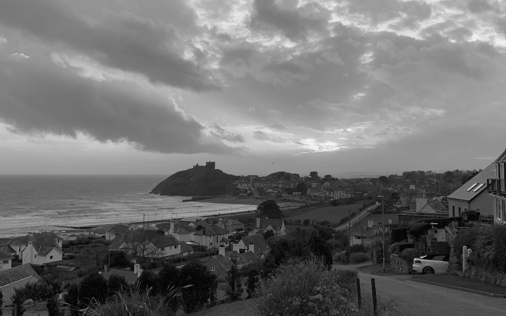
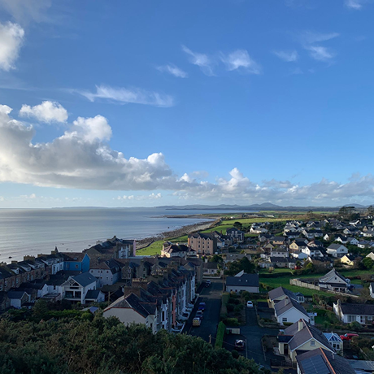

Un viaje épico de Kentucky a Burundi pasando por Gales y Ucrania

Conoce un poco mejor los lugares de los que proceden tus colegas en línea
Todo ser humano es un artista, un ser de la libertad, llamado a participar en la
transformación y reforma de las condiciones, el pensamiento y las estructuras que conforman e influyen en
nuestras vidas.
— Joseph Beuys
La ciudad de TripleTen ha reunido a profesionales de diferentes rincones del mundo.
Hoy, la Galería de Arte TripleTen se enorgullece de presentar historias y fotografías de algunas de las personas
que dedican su tiempo y esfuerzo a hacer que los futuros profesionales de la tecnología de esta ciudad se
sientan como en casa. Cada uno de nosotros tiene una historia única sobre el lugar del que procede. No dudes en
añadir a nuestra colección tu propia historia y una obra de arte visual dedicada a tu ciudad natal. No importa
de dónde seas, nos alegra que seas nuestro vecino.
/*empezar a armar los bloques de texto y con la imagen y luego crear places.css y armar ahí el grid*/
Cricieth, Gales
ARTISTAS
Steffan Warren, editor jefe Kseniya Glagoleva, gerente de proyectos

Las ruinas medievales del castillo de Cricieth dominan la ciudad desde una roca que extiende sobre el mar. Se cree que fue construido por Llewelyn el Grande en el S. XIII. 800 años después, la autodenominada Perla de Gales en las costas de Snowdonia, se ha convertido en un popular destino turístico durante los meses de verano.
A pocos pasos de camino al castillo, puedes disfrutar de los mejores helados del mundo en Cadwalader's, cuyo ingrediente secreto se rumorea que son algas marinas de la localidad. Otra cosa por la que es famosa Cricieth es por haber ganado el premio *Gales en flor* durante cinco años seguidos por sus espectaculares muestras florales alrededor de la ciudad. También vio nacer a David Lloyd George, el único galés que ha sido Primer Ministro del Reino Unido.